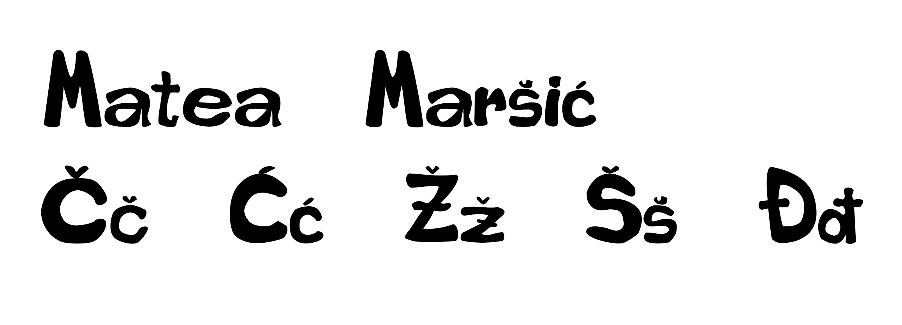

Lijep pozdrav! Ja sam Matea Maršić. Dobro došli na moju web stranicu :)
Lijep pozdrav! Ja sam Matea Maršić. Dobro došli na moju web stranicu :)
U ovom zadatku sam radila svoj font u programu FontForge.
Učili smo kako crtati Bezierove krivulje u koordinatnom sustavu, te kako napraviti masku od teksta.
Koristili smo se alatom Pen kako bi crtali elemente sa predloška. Također je upotrebljeno; rotacija, scale, transparencija, multipliciranje i grupiranje oblika.
Izrada složenih objekata koji se sastoje od više staza metodama spajanja ili oduzimanja oblika.
Apliciranje različitih vrsta gradijenata (linearni, radijalni, mesh...) od dvije ili više boja.
Transparencija i poredak slojeva u izradi složene grafike.
Primjenjivali smo tehnike retuširanja na zadane slike.
Selekcija željenih djelova i stvaranje maske
zatim, koloriranje slike koje se može primijeniti na crno-bijele slike
ili slike u boji kojima želimo promijeniti nijansu određenih područja.
Kombiniranje više fotografija izrezivanjem dijelova različitih slika i spajanjem u jednu cjelinu.

Kinemagraf-spajanje statične i pokretne slike.